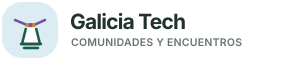

Faro
Un faro atlántico que convierte la luz en señal de encuentro
ConceptoDescargar SVG ↓
Estas propuestas salen de la letra G y del contorno del mapa. Toman referencias del paisaje, la cultura y la vida en comunidad de Galicia.

Un faro atlántico que convierte la luz en señal de encuentro
Las curvas de las rías y los puntos de las comunidades que se encuentran en ellas
Vieira jacobea orientada a la derecha, con radios que convergen en la bisagra y los colores de la señal del Camino.
Bocadillos enlazados que representan comunidades compartiendo ideas
Espirales grabadas en piedra convertidas en una red de nodos tecnológicos